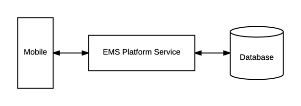

Note: api/v1/authentication is the endpoint within the API where your request must be sent.
Authenticate your users via Everyday Application User (emsuser) credentials stored in the EMS database. This is the default configuration that ships with {{product_mobile}}.

After successful connection to EMS Platform Services, the user will:
If the credentials are missing or invalid when the user taps Sign In, an error message will appear indicating invalid credentials or that the fields are required.
Assuming you have installed the EMS Platform Services (at https://yourcompany.com/ems-platform-api), you can test the authentication with a curl command:
curl -X POST -H 'x-ems-consumer: MobileApp' -H 'Content-Type: application/json' -d '{"username":"your_username", "password":"your_password"}' https://ems.yourcompany.com/endpoint...authentication
...where your_username and your_password are your credentials.
|
|
Note: api/v1/authentication is the endpoint within the API where your request must be sent. |
Page tags: article:topic